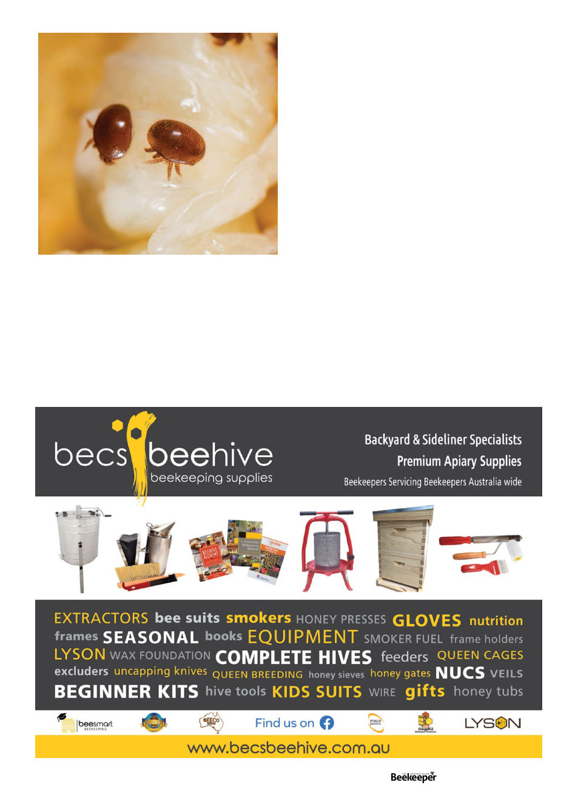

References
1. Source: I googled the prices of them all just now (mid
July 2024), as found with the first google result for each
one.
2. Tihelka, E., (2018) “Effects of Synthetic and Organic
Acaricides on Honey Bee Health: A Review” Slovenian
Veterinary Research, 55(3) https://doi.org/10.26873/
SVR-422-20
3. https://www.dpi.nsw.gov.au/emergencies/biosecurity/
current-situation/varroa-mite-emergency-response/
managing
4. -your-hives-with-varroa/primefact-varroa-mite-
management-options-in-nsw
5. National Varroa Management Program Weekly Update
(email) 26 July 2024
6. The Randy Oliver graphs are obviously © Randy Oliver,
as he puts it on his website, “Everything on this
website is open access and freely given to beekeepers
and researchers worldwide, on a not-for-profit basis,”
which I think we should all immensely appreciate..
As you can see, even with three treatments where the mites
reached threshold level, if we didn’t check again for 16 weeks
after the mid March treatment it would be nearly crashed (one
can enter this year’s ending mite population of “1,897” in the
starting mite population to generate a chart showing what
the next year would look like – it would crash very quickly).
But if we checked mite levels in May we’d see it’s over the
winter threshold, treat, and we’d be ending the year with 95
mites, same as we started. Obviously in Southern Victoria and
Tasmania we would be unlikely to even be looking at our bees
in May but we’d also have a brood break – which chart I could
easily generate using Randy’s tool but this article already has far
too many charts so feel free to download it yourself and play
around with it.
And of course this is just a model to help understand mite
population dynamics, because the reality on the ground could
be dangerously different there’s no substitute for mite checks.
I hope you’ve found this useful, I plan to thoroughly cover
a specific aspect of mite management like this every month
going forward.
Vol. 126 | No. 02 |
Celebrating 125 years | 27